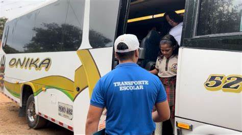

La alegría de Ana Luisa también se reflejaba en los rostros de los progenitores de otros 2.385 escolares que viven en Venezuela pero reciben sus clases en instituciones públicas de la capital nortesantandereana. Para ellos también quedó asegurado el transporte escolar por parte de la alcaldía de Cúcuta, que desde ayer también les garantizó a otros 2.329 niños y niñas del sector rural de Cúcuta las condiciones de desplazamiento para que asistan a las aulas de clase.
En total, son 4.700 estudiantes a los que se les garantizó el servicio de transporte, según informó el secretario de Educación Luis Eduardo Royero, al confirmar la finalización del proceso contractual con la Unión Temporal Escolar AC, compañía a la que le fue adjudicado el contrato.
“Se han establecido las estrategias técnicas, logísticas y legales para que el servicio de transporte escolar se preste de manera oportuna y eficaz”, dijo el alcalde Jairo Yáñez, al dar a conocer que gracias a diversas reuniones con la alcaldía del municipio Pedro María Ureña se vienen logrando acuerdos importantes para facilitar el flujo de vehículos en la zona del Puente Internacional Francisco de Paula Santander. Royero indicó que se adelantaron las reuniones pertinentes con los rectores de las instituciones educativas para definir la logística y los alumnos que ellos mismos han identificado con la necesidad del transporte. “Pese al déficit de $3 billones de pesos manifestado por el Ministerio de Educación frente al Sistema General de Participaciones, que ha hecho difícil la financiación del transporte fronterizo, hemos aunado esfuerzos para brindar bajo las mismas garantías la prestación del servicio a los estudiantes que residen del lado venezolano y que estudian en Colombia” afirmó el funcionario.
La Policía Metropolitana de Cúcuta (Mecuc), informó que el hecho violento se registró después de las 8 de la mañana. El uniformado herido es el intendente Freddy Bautista Peñaloza, subcomandante de la unidad policial.
"En el corregimiento de Banco de Arena delincuentes armados atacaron el puesto de seguridad de la
subestación de Policía", señaló una fuente oficial.
Se conoció que debido al alto riesgo de la zona fue necesario activar un riguroso dispositivo de
seguridad para extraer al suboficial.
Esto obligó a los compañeros de Bautista a prestar los primeros auxilios y estabilizar las heridas
localizadas en el brazo izquierdo y la espalda, mientras se esperaba el traslado aéreo o terrestre.
(Además: Tras su asesinato, familia de Karen lucha para que no profanen más su tumba)
Finalmente, el uniformado fue trasladado a una clínica en Cúcuta, donde el personal médico aún no ha
entregado un diagnóstico de la gravedad de las heridas.
Este es el segundo ataque contra la Policía Nacional en el área metropolitana de Cúcuta en menos de una
semana. El 6 de febrero un patrullero fue asesinado mientras impedía el robo de una motocicleta.
ANDRÉS CARVAJAL
Para EL TIEMPO
CÚCUTA
Según el reporte del Dane, el costo de vida completó siete meses consecutivos por encima del 10 por ciento. Para enero de 2023, la variación mensual del Índice de Precios al Consumidor, IPC , fue de 1,78 por ciento. "El comportamiento anual del se explicó principalmente por la variación en las divisiones alimentos y bebidas no alcohólicas, alojamiento, agua, electricidad, gas y otros combustibles", menciona el informe. (Siga leyendo: Tasa de usura alcanza el pico más alto del presente siglo, 45,27 %). Los mayores incrementos se registaron en productos como: arracacha, ñame y otros tubérculos, cuyo aumento fue de 106,83 por ciento. Seguido de la cebolla con un aumento del 101,51 por ciento. Por su parte, la yuca presentó un aumento del 63,17 por ciento. Dentro de los productos que tuvieron un incremento menos signicativo se encuentran: la panela con 4,28 por ciento, el agua mineral con 9,36 por ciento y los concentrados para preparar refrescos con 9,52 por ciento. (Además: Inflación anual en Colombia no da tregua y llegó a 13,25 % en enero). La entidad también reveló las ciudades con los productos más caros, según el reporte, la primera ciudad es Cúcuta con un 15,91 por ciento; seguido de Sincelejo con 15,45 por ciento y Montería con 15,35 por ciento. En cuanto a la capital del país y las áreas urbanas, el IPC se fijó por debajo el promedio nacional, en el mes de enero Bogotá tuvo el 12,71 por ciento, Manizales el 12,83 por ciento, mientras que Villavicencio tuvo la cifra más baja con 7,08 por ciento. (Siga leyendo: Los puntos clave que tendría articulado del Plan de Desarrollo, según borrador). Por último, este porcentaje de variación mensual se distribuye de la siguiente manera: transporte con 3,98 por ciento, restaurantes y hoteles con 3,11 por ciento y alimentos y bebidas alcoholicas con 2,46 por ciento
Aguas Kpital informó que realizarán trabajos de recuperación de la vía. La empresa Aguas Kpital Cúcuta, informó en la tarde de esta lunes que realizarán la recuperación de la carpeta asfáltica en la autopista Atalaya (vía al terminal) por la entrada al Barrio 6 de enero, por lo que se verán en la obligación de hacer cierre de medio carril. Según la empresa, los trabajos se llevarán a cabo este martes 21 de febrero 2023, desde las 06:00 a. m. a 1:00 p. m, con labores de replanteo y aplicación de la mezcla asfáltica. “Se habilitará la vía para su libre circulación durante el transcurso del día con el fin de mitigar al máximo la afectación de la movilidad a la comunidad. Ofrecemos disculpas por las incomodidades que se puedan presentar y recomendamos tomar las rutas alternas aquí dispuestas”, se lee en el comunicado.